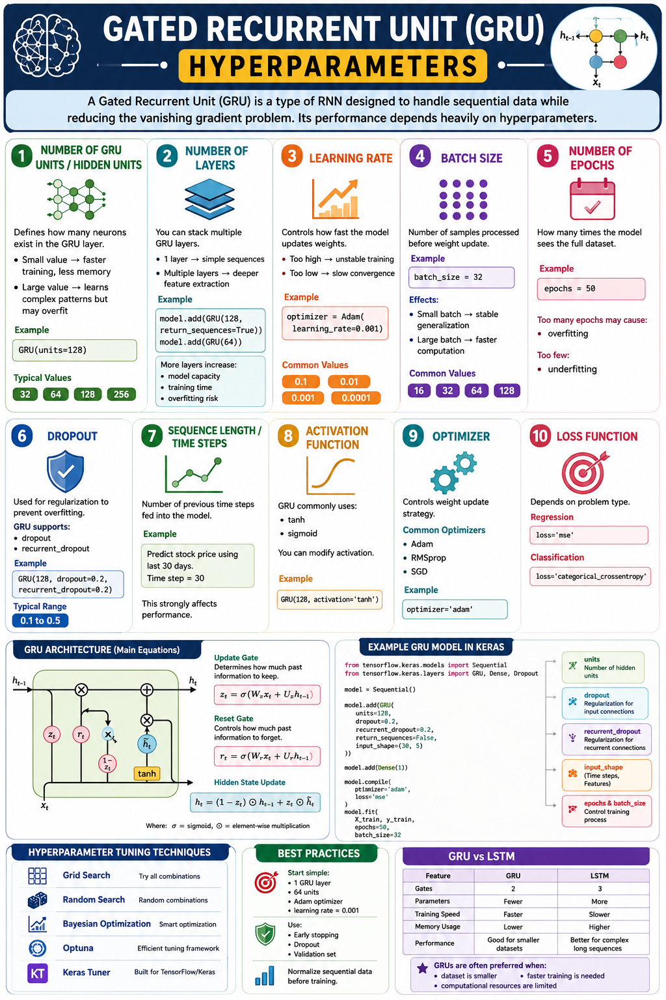

Master every dial and knob that shapes GRU performance
A Gated Recurrent Unit (GRU) is a streamlined RNN variant designed to combat the vanishing gradient problem. Its real‑world success hinges on choosing the right hyperparameters. This guide covers all 10 essential ones — from hidden units to loss functions — with practical Keras examples and a ready‑to‑run stock market prediction demo.

zt = σ(Wzxt + Uzht-1)rt = σ(Wrxt + Urht-1)ht = (1−zt)⊙ht-1 + zt⊙h̃t📊 GRU architecture overview — update gate, reset gate, and hidden state flow
Defines how many neurons exist in the GRU layer. More units = higher capacity to learn complex patterns, but also more memory and risk of overfitting.
Stack multiple GRU layers for deeper feature extraction. Use return_sequences=True on all but the last GRU layer.
Controls the step size during weight updates. The single most impactful hyperparameter.
Number of samples processed before each weight update. Balances gradient stability and training speed.
How many complete passes through the training dataset. Use Early Stopping to avoid overfitting.
Randomly drops connections during training to prevent overfitting. GRU supports both input dropout and recurrent dropout.
Number of previous time steps fed into the model. Directly shapes the input tensor.
GRU internally uses tanh (candidate state) and sigmoid (gates). You can specify the output activation.
Controls the weight update strategy. Adam is the go‑to choice for most GRU applications.
Measures prediction error. Choice depends entirely on problem type.
The GRU cell uses two gates (update & reset) instead of LSTM's three, making it computationally lighter while retaining the ability to capture long‑range dependencies.
Let’s dissect each component of the update gate equation zt = σ(Wz·xt + Uz·ht−1) and the other GRU equations.
Understanding the role of each tensor helps you see why GRUs work.
Decides how much of the past hidden state to carry forward. Values near 1 retain old info; near 0 replace it with new info.
Controls how much of the previous hidden state contributes to the candidate state. Allows the cell to discard irrelevant history.
These hyperparameters govern how the model learns — controlling the optimization trajectory, convergence speed, and data flow during training.
The step size for gradient descent. Arguably the most critical hyperparameter to tune.
Affects gradient noise and training speed. Small batches → better generalization; large batches → faster but riskier.
Full dataset passes. More isn't always better — monitor validation loss.
Adam adapts learning rates per‑parameter; RMSprop handles non‑stationary objectives well; SGD with momentum is a classic.
Prevent overfitting and improve generalization with these techniques specifically designed for recurrent networks.
Randomly zeros input units during training. Applied to the input connections of the GRU cell.
Applies dropout to the recurrent connections (hidden‑to‑hidden). More aggressive regularization.
Halts training when validation loss stops improving. Essential for preventing overfitting.
Gradually reduces the learning rate as training plateaus, helping the model settle into a better minimum.
A complete, runnable example using synthetic stock‑like data. Every hyperparameter is annotated with circled numbers (①–⑩) matching the cards above.
⬆️ Copy & paste into a .py file or Jupyter notebook. All ⑩ hyperparameters are labeled.
| # | Hyperparameter | Purpose | Typical Range / Values |
|---|---|---|---|
| ① | GRU Units | Model capacity & pattern complexity | 32, 64, 128, 256 |
| ② | Number of Layers | Depth of feature extraction | 1–3 (rarely more) |
| ③ | Learning Rate | Step size for weight updates | 1e-4 to 1e-2 (default: 0.001) |
| ④ | Batch Size | Samples per weight update | 16, 32, 64, 128 |
| ⑤ | Epochs | Full passes through dataset | 10–200 (use EarlyStopping) |
| ⑥ | Dropout | Prevent overfitting | 0.1–0.5 |
| ⑦ | Sequence Length | Temporal context window | Problem‑dependent (10–100+) |
| ⑧ | Activation | Nonlinearity in cell computation | tanh (default), sigmoid |
| ⑨ | Optimizer | Weight update strategy | Adam, RMSprop, SGD |
| ⑩ | Loss Function | Error measurement | MSE (regression), Crossentropy (classif.) |
Discovered automatically during training
Set manually before training begins
Use these defaults as your first experiment baseline:
🔬 Tune from here: adjust learning rate first, then units/layers, then dropout.
| Feature | GRU | LSTM |
|---|---|---|
| Gates | 2 (update, reset) | 3 (forget, input, output) |
| Parameters | Fewer | More (~33% more) |
| Training Speed | ⚡ Faster | 🐢 Slower |
| Memory Usage | Lower | Higher |
| Best For | Smaller datasets, faster iteration | Complex long sequences, large data |